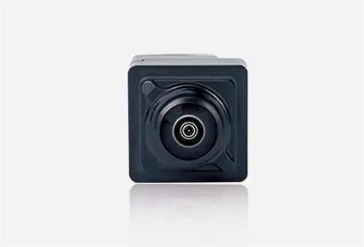

VT-Cockpit® / 智能座舱
摄像头监控系统
产品概览
面向商用车场景，CMS 以摄像头与车内显示屏替代传统光学后视镜，帮助扩展侧后方视野，并改善夜间、雨雾等复杂环境下的观察体验。

Capabilities
通过摄像头采集并显示车辆侧后方画面，减少视野遮挡。
针对夜间、雨雾与强光场景进行成像优化。
面向客车、卡车等车型开展安装、显示与法规项目适配。
Applications
面向商用车场景，CMS 以摄像头与车内显示屏替代传统光学后视镜，帮助扩展侧后方视野，并改善夜间、雨雾等复杂环境下的观察体验。
面向商用车场景，CMS 以摄像头与车内显示屏替代传统光学后视镜，帮助扩展侧后方视野，并改善夜间、雨雾等复杂环境下的观察体验。
面向商用车场景，CMS 以摄像头与车内显示屏替代传统光学后视镜，帮助扩展侧后方视野，并改善夜间、雨雾等复杂环境下的观察体验。
Related Products
产品功能和配置可根据车型与项目需求定制，具体方案以项目评估为准。